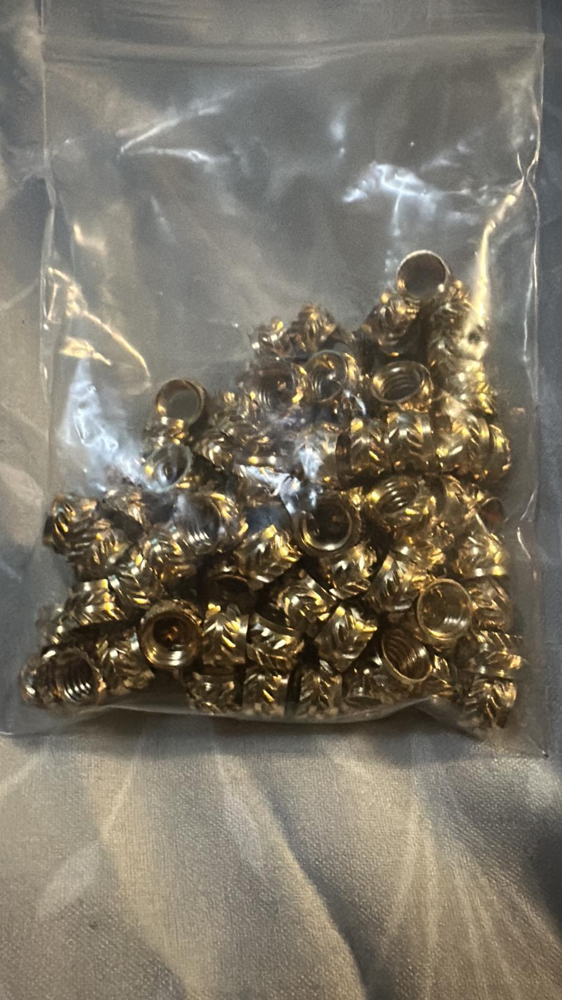
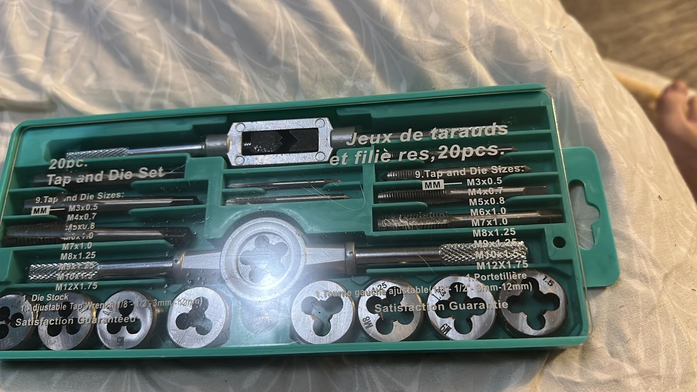

Vee Block Clamp Tests
I’ve been doing a few thread tests, and it turns out it’s surprisingly hard to get a thread that’s both printable and actually functional (good engagement, correct fit, and not a pain to assemble).
For the vee block clamp itself I need a bit of flexibility (unlike the vee block body), so I’m moving this part to the FDM printer in ABS.
I’d normally consider PLA because it’s easy, but PLA has a huge problem with creep over time. These clamps won’t see crazy forces, but if I’m holding a part for a few hours a day on a CMM, PLA will slowly relax. So: ABS it is.
That leaves the big question:
- What do I do about the threads on the clamp?
- Do I use brass heat inserts?
- Do I tap directly into the FDM print?
It’s a lot of decisions for what should be a simple threaded part.
To get some real answers, I ordered:
- M6 brass heat inserts from AliExpress (ridiculously cheap)
- A tap and die set (M2–M12) (also cheap, but honestly the quality looks great for the price)
The goal with these purchases is simple: figure out what’s actually going to work for the final product.


Test 1: tapping directly into FDM ABS
I printed a set of simple blocks to test the “just tap the plastic” approach.
Print settings / notes:
- 3 wall perimeters to give enough material for the thread to cut into
- Followed the Zeus book tapping drill sizes for M3, M4, M6, M8
- I was modelling in a hurry (half watching a film) and forgot to chamfer the holes… which definitely didn’t help for starting the taps
Six sample parts took just under an hour to print.
Results:
- M8, M6, and M4 tapped completely fine
- They were a bit finicky to start (a chamfer would have helped a lot)
- M3 started cutting, but the fine pitch ended up pulling plastic out and it wouldn’t properly bite
Next steps for the M3:
- First I’ll re-print with a proper chamfer
- If it still behaves badly, I’ll try increasing the tapping drill size slightly
Realistically, for FDM I’m probably going to stick to M4 and above anyway — the pitch gets so small at M3 that stripping becomes way too easy.
Test 2: clamp prototypes — heat insert vs tapped hole
Now that I know tapping into ABS is at least viable, the next test is to print some clamps for the vee-block prototypes I labelled 35 mm² at the time; I did not record unambiguous dimensions in this post, so that note should not be treated as a specification.
I’m going to print two clamp samples:
- One with an M6 heat insert
- One with a 5 mm hole for tapping M6 directly
Both will be solid infill for these tests.
For now I’ll use a simple bolt for clamping, because it’s high quality and strong enough to not be a variable.
Once I’ve decided the direction, I’ll figure out the final plan for the threaded shaft / clamping screw part.
The threaded shaft problem (and a possible shortcut)
I did a quick preliminary test on making printed “studs” and cutting the thread using a die:
- One shaft at 11.87 mm for M12
- One shaft at 7.97 mm for M8
A quick Google gave me those diameters for die-cutting, but they’re likely intended for metal.
Both shafts split at the layer line, which is not surprising given they were printed vertically.
What I’m going to try next:
- Print horizontally (or at least not purely vertical)
- Go slightly more undersized
- Try resin as well — although I expect it to be too brittle
If printed shafts keep being unreliable, the “boring but strong” approach is probably best:
- Use a headed bolt as the shaft
- Add a knurled/hand knob at the top for easy turning
That does add some cost, but it might be worth it for reliability. A quick AliExpress search looks like about 75p for 10, so it’s not outrageous.
The aim here is to choose whatever gives the most consistent, durable clamp — even if it’s not the purest “fully printed” solution.